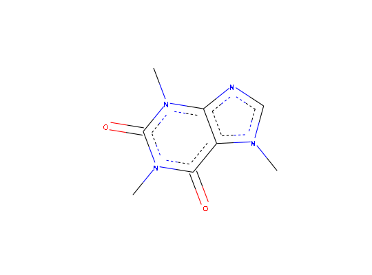

The class is initialised with an identifier. Chemical information is retrieved from
the internet. Additionally, it can be generated using RDKit if RDKit and its
python bindings are installed and configured for use with PythonInR.
chent
An R6Class generator object
Fields
identifier- The identifier that was used to initiate the object, with attribute 'source'
inchikey- InChI Key, with attribute 'source'
smiles- SMILES code, with attribute 'source'
mw- Molecular weight, with attribute 'source'
pubchem- List of information retreived from PubChem
rdkit- List of information obtained with RDKit, if installed and
configured for use with PythonInR
svg- SVG code
Picture- Graph as a
picture object obtained using grImport
Pict_font_size- Font size as extracted from the intermediate PostScript file
pdf_height- Height of the MediaBox in the pdf after cropping
chyaml- List of information obtained from a YAML file
degradation- List of degradation endpoints
Examples
oct <- chent$new("1-octanol", smiles = "CCCCCCCCO")
#> PubChem:
#> https://pubchem.ncbi.nlm.nih.gov/rest/pug/compound/name/cids/JSON
#> https://pubchem.ncbi.nlm.nih.gov/rest/pug/compound/cid/property/MolecularFormula,MolecularWeight,CanonicalSMILES,IsomericSMILES,InChI,InChIKey,IUPACName,XLogP,TPSA,Complexity,Charge,HBondDonorCount,HBondAcceptorCount/JSON
#> https://pubchem.ncbi.nlm.nih.gov/rest/pug/compound/cid/synonyms/JSON
#>
#> Initialize Python Version 3.4.2 (default, Oct 8 2014, 10:47:48)
#> [GCC 4.9.1]
#> Trying to get chemical information from RDKit using user SMILES
#> CCCCCCCCO
#> Did not find chyaml file ./1-octanol.yaml
print(oct)
#> <chent>
#> Identifier $identifier 1-octanol
#> InChI Key $inchikey KBPLFHHGFOOTCA-UHFFFAOYSA-N
#> SMILES string $smiles:
#> user PubChem_Canonical
#> "CCCCCCCCO" "CCCCCCCCO"
#> Molecular weight $mw: 130.2
#> PubChem synonyms (up to 10):
#> [1] "957" "1-octanol" "Octan-1-ol" "octanol"
#> [5] "Octyl alcohol" "N-octanol" "Capryl alcohol" "n-Octyl alcohol"
#> [9] "111-87-5" "caprylic alcohol"
plot(oct)
caffeine <- chent$new("caffeine")
#> PubChem:
#> https://pubchem.ncbi.nlm.nih.gov/rest/pug/compound/name/cids/JSON
#> https://pubchem.ncbi.nlm.nih.gov/rest/pug/compound/cid/property/MolecularFormula,MolecularWeight,CanonicalSMILES,IsomericSMILES,InChI,InChIKey,IUPACName,XLogP,TPSA,Complexity,Charge,HBondDonorCount,HBondAcceptorCount/JSON
#> https://pubchem.ncbi.nlm.nih.gov/rest/pug/compound/cid/synonyms/JSON
#> Trying to get chemical information from RDKit using PubChem_Canonical SMILES
#> CN1C=NC2=C1C(=O)N(C(=O)N2C)C
#> Did not find chyaml file ./caffeine.yaml
print(caffeine)
#> <chent>
#> Identifier $identifier caffeine
#> InChI Key $inchikey RYYVLZVUVIJVGH-UHFFFAOYSA-N
#> SMILES string $smiles:
#> PubChem_Canonical
#> "CN1C=NC2=C1C(=O)N(C(=O)N2C)C"
#> Molecular weight $mw: 194.2
#> PubChem synonyms (up to 10):
#> [1] "2519" "caffeine"
#> [3] "Guaranine" "1,3,7-Trimethylxanthine"
#> [5] "Methyltheobromine" "Cafeina"
#> [7] "Thein" "Koffein"
#> [9] "Mateina" "Theine"
plot(caffeine)
